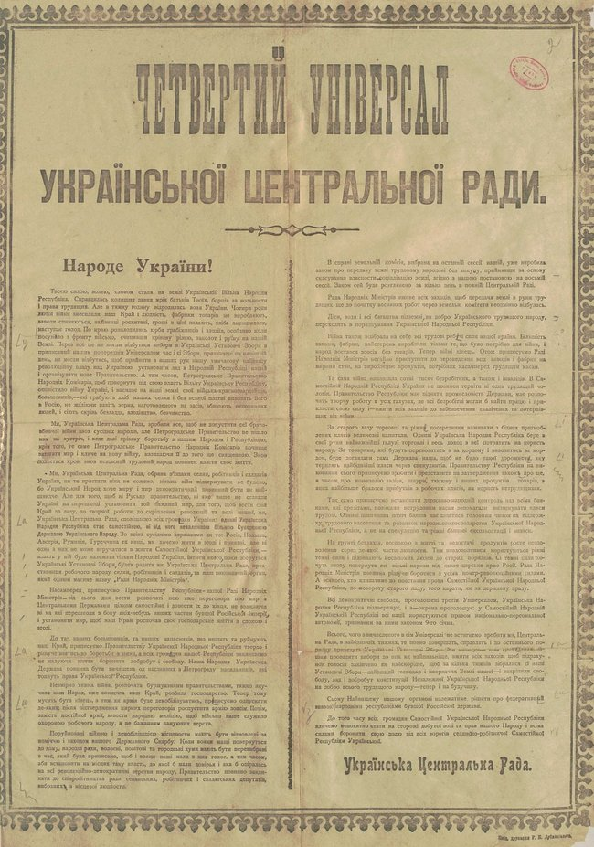
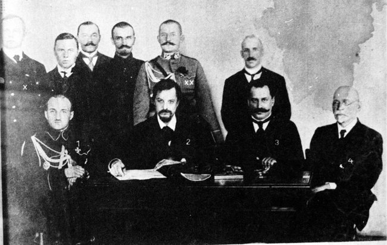
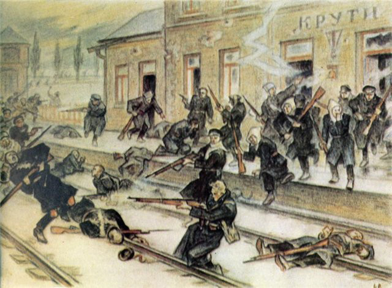
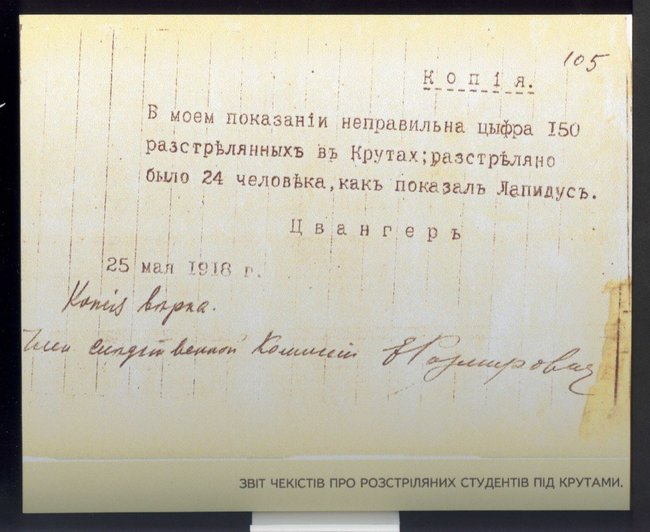

Важливі акценти
- Бій під Крутами став успішною оборонною операцією. Наступ переважаючих сил ворога було зупинено на декілька днів. Це дало змогу представникам Української Народної Республіки підписати Брестський мирний договір із країнами Четверного союзу
- Брестський мир означав визнання самостійної Української Народної Республіки суб’єктом міжнародних відносин.
- Незалежність Української Народної Республіки довелося захищати від російської військової агресії на початках силами добровольчих формувань.
- Згодом українські війська за підтримки німецьких та австро-угорських (завдяки Брестському договору) звільнили від більшовиків всю територію України.
- Події Української революції засвідчили: державність без армії неможлива.
- Сміливість та жертовність крутянців зробила їх прикладом для майбутніх поколінь захисників України. З ними порівнюють захисників Донецького аеропорту в теперішній російсько-українській війні. Тому героїв Крут у публіцистиці часто називають “першими кіборгами”.
Історична довідка
Перша незалежність
У 1917 році постала Українська Центральна Рада, згодом була створена Українська Народна Республіка.
 Прихід до влади у Росії більшовиків у листопаді 1917 року становив загрозу для України. Вони прагнули встановити контроль над Україною. У грудні більшовицький уряд Росії (Рада народних комісарів) направив ультиматум Українській Центральній Раді. У ньому йшлося про виконання таких умов: дозволити переміщення більшовицьких військ в Україні, не пропускати із фронту (Першої світової війни) на Дон антибільшовицькі сили і відмовитися від утворення окремого Українського фронту. Українці відхилили вимоги і звинуватили більшовицьку Росію у втручанні у внутрішні справи України та розпалюванні ворожнечі. Раднарком, своєю чергою, оголосив Центральну Раду “в стані відкритої війни проти Радянської влади в Росії і на Україні”.
7 січня 1918 року більшовики оголосили загальний наступ на Україну. У середині січня 1918-го вони встановили контроль майже на всьому Лівобережжі та просувалися на Київ. За таких умов 22 січня 1918 року Українська Центральна Рада ІV Універсалом проголосила незалежність Української Народної Республіки.
Напередодні бою
Більшовицькі сили наступали на Київ з двох напрямків. Загін під командуванням Михайла Муравйова просувався Полтавщиною, в той час як на Чернігівщині діяв 1-й Мінський революційний загін на чолі з Рейнгольдом Берзіним. Вважаючи полтавський напрямок найбільш загрозливим, українське командування спрямувало туди найбоєздатніші частини, зокрема, Січових стрільців та Гайдамацький кіш Слобідської України.
Всупереч розрахункам, основні сили загону Муравйова вирушили на з'єднання з Мінським революційним загоном. 28 січня вони заволоділи ключовим пунктом української оборони на Чернігівщині – станцією Бахмач. Здавалося, більше нічого не завадить більшовицькому наступу на Київ.
На підступах до столиці Муравйов закликав: “Наше бойове завдання – взяти Київ... Жаліти київських мешканців нема чого, вони терпіли гайдамаків – нехай знають нас і одержать відплату. Жодного жалю до них! Кров’ю заплатять вони нам. Якщо треба, то каменя на камені не залишимо".
Проте вже наступного дня на станції Крути їхній наступ зупинили українські частини, до яких підійшло підкріплення – курсанти Київської юнацької військової школи імені Богдана Хмельницького сотника Аверкія Гончаренка та добровольці Помічного студентського куреня Січових стрільців (18-20-річні юнаки з Університету святого Володимира, Українського народного університету, Київської гімназії Кирила та Мефодія). До курсантів юнацької школи, студентів і гімназистів приєдналося ще десь 80 добровольців із підрозділів Вільного козацтва з Ніжина.
Перші кіборги
29 січня 1918 року в Крутах перебувало до 520 українських воякiв, юнакiв і студентiв при 16 кулеметах та з однією гарматою на залiзничнiй платформi. У росіян була десятикратна перевага в живій силі, мали бронепотяг та артилерію.
Військами УНР під Крутами командував Аверкій Гончаренко. Завдяки вигідній позиції і героїзму бійців українцям вдалося завдати росіянам значних втрат і стримати наступ до темряви. Потім під тиском ворога більшість підрозділів організовано відступили до ешелонів на станції неподалік і вирушили в бік Києва, руйнуючи за собою залізничні колії. Але одна студентська чота – 27 юнаків, – заблукавши у темряві, повернулася до станції Крути, яка на той час уже була зайнята більшовиками. Вони потрапили в полон. Полонених катували, а потім стратили. Згодом частину героїв поховали на Аскольдовій могилі у Києві.
На сьогоднi вiдомi прiзвища 20 з них. Це студенти Народного унiверситету Олександр Шерстюк, Ісидор Пурик, Борозенко-Конончук, Головащук, Чижов, Сiрик, Омельченко (сотник); студенти Київського унiверситету святого Володимира Олександр Попович, Володимир Шульгин, Микола Лизогуб, Божко-Божинський, Дмитренко, Андрiїв; гiмназисти 2-ї Кирило-Мефодiївської гiмназiї Андрiй Соколовський, Євген Тернавський, Володимир Гнаткевич, Григiр Пiпський, Іван Сорокевич, Павло Кольченко (прапорщик), Микола Ганкевич.
Загалом у бою під Крутами загинуло з української сторони, за різними оцінками, 70–100 осіб.
Втрати бiльшовицьких вiйськ сягали 300 воякiв.
Брестський мирний договір
Затримавши ворога на чотири дні, українські війська дали змогу уряду укласти Брестський мир між Українською Народною Республікою і державами Четверного союзу. Перемовини закінчилися 9 лютого 1918 року підписанням Брестського мирного договору. Він визначав:
- визнання Четверним союзом самостійної Української Народної Республіки суб’єктом міжнародних відносин;
- перехід Холмщини та Підляшшя до складу України; Східна Галичина та Буковина мали бути виділені в окремий коронний край Австро-Угорщини;
- кордон із Польщею, що мав бути визначений комісією “на основі етнографічних відносин і бажань людности”;
- обмін військовополоненими та встановлення дипломатичних відносин;
- постачання УНР іншій стороні до 31 липня 1918 року 60 мільйонів пудів хліба, 2750 тисяч пудів м’яса, іншу сільгосппродукцію та промислову сировину.
- відмову сторін від взаємних претензій на відшкодування збитків, спричинених війною;
Тим часом 4 лютого 1918 року більшовицькі війська Михайла Муравйова підійшли до Києва. Під гуркіт гармат Центральна Рада приймала найрадикальніші закони – про ліквідацію права власності на землю та демобілізацію.
Через два дні почався масований артилерійський обстріл, ще через 3 дні муравйовці ввірвалися в місто. Розгорнулося мародерство і полювання на українських чиновників, офіцерів, усіх “підозрілих”. Жертвами “червоного терору” стали декілька тисяч киян. Вже наприкінці лютого 1918 року завдяки підтримці німецьких та австро-угорських військ українці почали звільнення України від більшовиків. У квітні було звільнено майже всю Україну.
Бій під Крутами став боєм за майбутнє України.